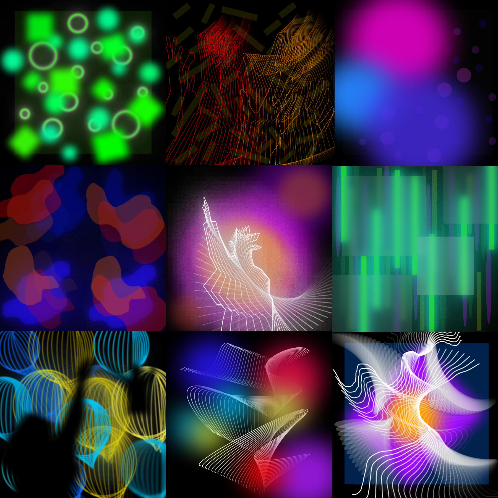
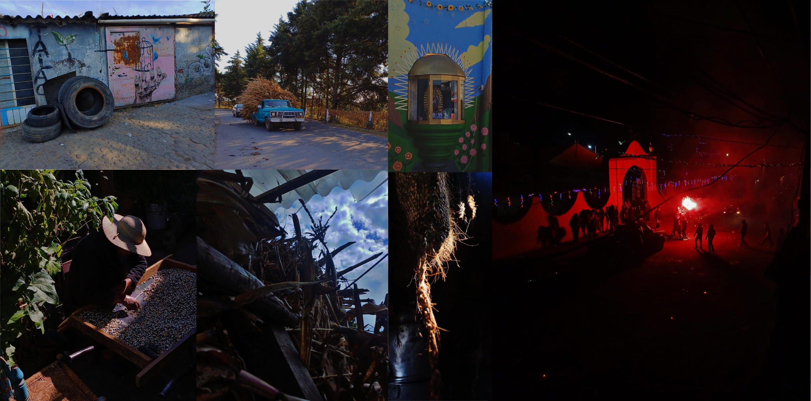
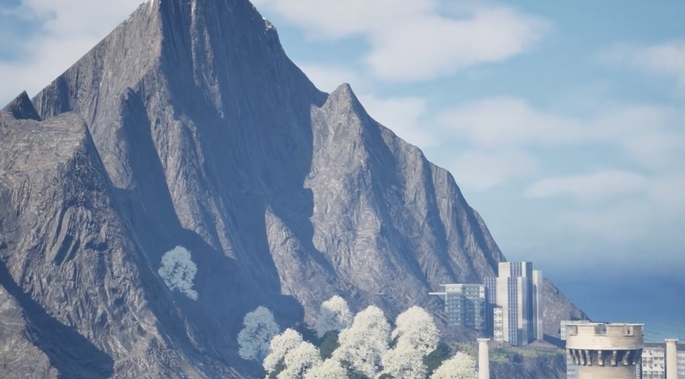
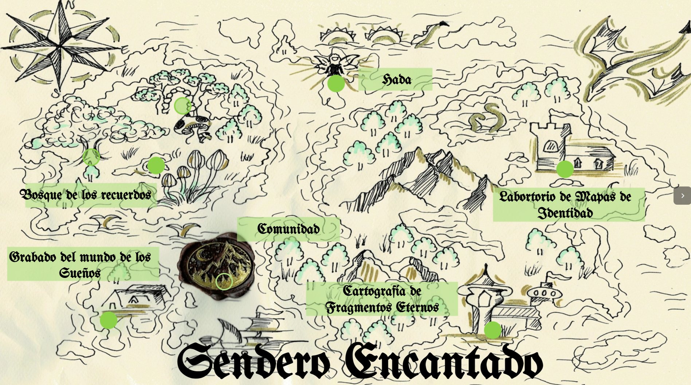

Susan Anel Jimenez Arellano

01
Instante Cromático es un proyecto que consta de 9 imágenes digitales en las cuales se explora la vibración del color y el instante con el fin de lograr un resultado no tan figurativo por medio de la utilización de figuras simples, la continuidad y la utilización de colores vividos para crear una experiencia inmersiva.

02
En esta serie fotografica se habla de la conexión con la tierra y las tradiciones de un pueblo llamado San Pedro Tlanixco en el cual a pesar de la modernización y urbanización sigue manteniendo sus tradiciones y el trabajo a mano en el campo.

03
Tráiler de ficcion por medio de un imaginario que cuenta la historia de un mundo mágico con diamantes al cual solo se puede acceder mediante un portal

04
Mapeo ficcionario que parte de un recorrido fotografico en el cual se experimento con diferentes tecnicas de intervención y fotografia